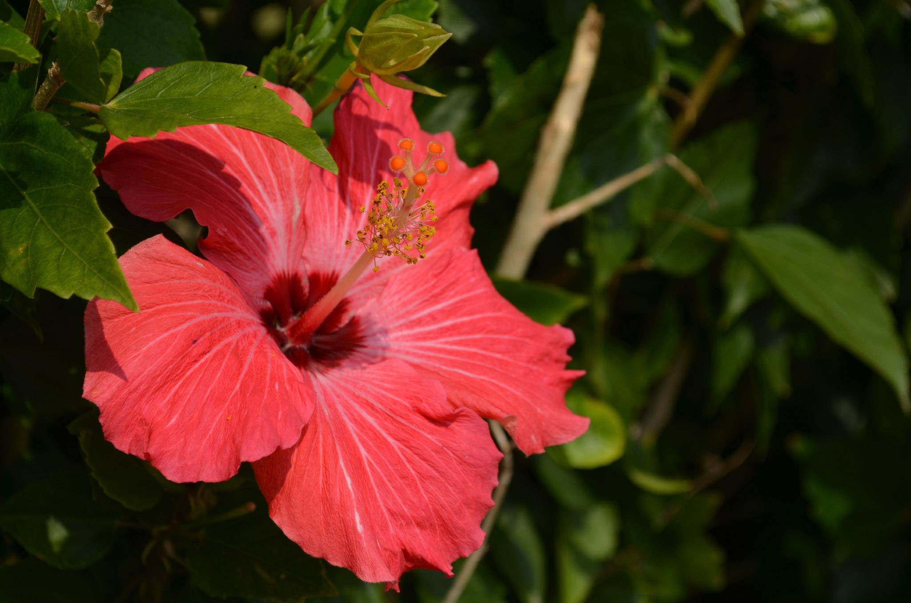

問題１： jQueryを使い、以下のa要素のリンク先をGoogle(https://www.google.com/)に変更してください。
リンク先
問題２： jQueryを使い、以下の画像の代替文字をconsole.logで表示してください。

問題３： jQueryを使い、上記の花の画像をネコの画像に差し替えてください。 画像ファイル名は、この問題文（p#question）のdata-img属性の値(cat.jpg)を取得して利用してください。